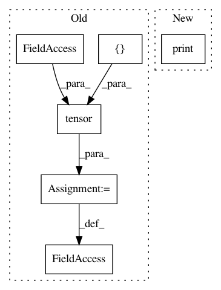

b6a7c304c68fe4a1300970459a3807ee7bce6c87,examples/cora.py,,,#,55
Before Change
return pred.eq(data.target[mask]).sum().item() / mask.size(0)
acc = []
for run in range(1, 101):
model.conv1.reset_parameters()
model.conv2.reset_parameters()
for _ in range(200):
train()
acc.append(test(test_mask))
print("Run: {:03d}, Test: {:.4f}".format(run, acc[-1]))
mean = torch.tensor(acc).mean().item()
std = torch.tensor(acc).std().item()
print("Mean: {:.4f}, Stddev: {:.4f}".format(mean, std))
After Change
for epoch in range(1, 101):
train()
log = "Epoch: {:03d}, Train: {:.4f}, Test: {:.4f}"
print(log.format(epoch, *test()))
In pattern: SUPERPATTERN
Frequency: 3
Non-data size: 6
Instances
Project Name: rusty1s/pytorch_geometric
Commit Name: b6a7c304c68fe4a1300970459a3807ee7bce6c87
Time: 2018-05-22
Author: matthias.fey@tu-dortmund.de
File Name: examples/cora.py
Class Name:
Method Name:
Project Name: rusty1s/pytorch_geometric
Commit Name: 5c227f24c46d916abf9bef2a7910710222ea47b3
Time: 2018-12-15
Author: matthias.fey@tu-dortmund.de
File Name: test/transforms/test_polar.py
Class Name:
Method Name: test_polar
Project Name: rusty1s/pytorch_geometric
Commit Name: 5c227f24c46d916abf9bef2a7910710222ea47b3
Time: 2018-12-15
Author: matthias.fey@tu-dortmund.de
File Name: test/transforms/test_spherical.py
Class Name:
Method Name: test_spherical